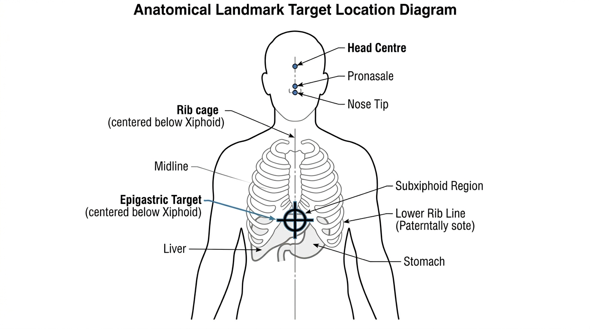

5.2.4 Mechanical Design for Padding
Foam Construction
The striking surface uses polyethylene foam wrapped in water-resistant faux leather. The design draws from commercial boxing focus mitts, which use multi-layer EVA and PU foam stacks to balance responsiveness with cushioning. For BoxBunny, a simpler single-material foam was sufficient because the spring return mechanism (described below) handles the rebound rather than the foam itself. Each pad weighs approximately 150 g. The faux leather outer layer protects the foam from sweat and surface wear during extended training sessions.
Strike-Zone Placement
Iteration 5 fixed the final mount geometry. The reference chain uses ANSUR II for erect trunk proportions (Gordon et al., 2015) and a direct boxing-stance self-check on a 177 cm male for the final practical gap.
Target Population and Reference Stature
The design target covers adults from 150 to 190 cm. A 170 cm reference stature is used for the nominal gap because it sits at the midpoint of the range and lands near the ANSUR II design value. ANSUR II is a US military sample, so it is not globally representative, but this gap is a trunk proportion, not a limb proportion, and the height-adjustable robot decouples the absolute floor height from the final pad spacing.
Gap Derivation from ANSUR II
ANSUR II does not tabulate pronasale or xiphoid height directly, so the gap is reconstructed from measured landmarks. Pronasale height is estimated as 0.870H from Drillis and Contini (1966). Xiphoid height is estimated as the midpoint of chestheight and tenthribheight, which places it between the nipple level and the lower rib cage in the survey data. The resulting erect nose-to-subxiphoid gap spans 28.5 to 33.3 cm across the 150 to 190 cm design range, with male and female values at the same stature differing by less than 0.5 cm.
The older geometric head-centre figure is not used for final sizing here because it measures a different landmark chain.
| Stature | Male gap | Female gap | n (M) | n (F) |
|---|---|---|---|---|
| ~150 cm | -- | 28.5 cm | <5 | 41 |
| ~160 cm | 30.2 cm | 29.9 cm | 31 | 254 |
| ~170 cm | 31.5 cm | 31.0 cm | 342 | 116 |
| ~177 cm | 32.4 cm | 31.8 cm | 491 | 28 |
| ~180 cm | 32.7 cm | -- | 420 | <5 |
| ~190 cm | 33.3 cm | -- | 57 | <5 |

Pad Size Evolution and Edge Contact
The first three iterations used body pads of approximately 150 mm by 100 mm, based on a boxing-glove face. That version was visually broad but left a clear break between adjacent pads and felt too forgiving as a target. The final 180 mm by 130 mm body pad is the tighter compromise: the 180 mm height gives the strike face enough vertical overlap to absorb the roughly 5 cm ANSUR II variation band, while the 130 mm width keeps the target strip narrow enough to reward cleaner placement. In the angled side layout, that width lets adjacent pads meet at the edges without creating an unstruck gap, but it still avoids a broad chest plate feel.
| Iterations | Body pad face (H x W) | Sizing basis |
|---|---|---|
| 1 to 3 | ~150 mm x 100 mm | Boxing glove face approximation |
| 4 to 5 (final) | 180 mm x 130 mm | Population coverage, edge contact, and strike precision |
Head Pad Sizing
The head pad at 200 mm by 230 mm matches two separate reference checks. Pheasant and Haslegrave report adult male head breadth at about 145 to 165 mm, which leaves a small lateral margin for a 200 mm pad width (Pheasant and Haslegrave, 2006). For height, Drillis and Contini place head height at about 0.130H, which gives roughly 225 to 234 mm across the 173 to 180 cm male mean range. The chosen 230 mm height sits inside that band, so the head pad is tall enough to catch realistic head motion without becoming so large that it stops reading as a defined target. The head pad is therefore sized as a compact but forgiving target, not as a broad surface.
Why the Liver and Stomach Pads Sit Below the Epigastric Region
The liver-side target sits to the right of the epigastric centreline, anchored at the right costal margin. Using the xiphoid at 0.618H as a skeletal anchor, the right midclavicular costal margin lies approximately 3 cm below the xiphoid. The liver centre is then estimated by adding half the liver's craniocaudal span (6.1 cm for males, 5.85 cm for females) measured from Malaysian ultrasound data (Lim et al., 2017). This places the lower liver target below the subxiphoid region, while still remaining in the right side torso band.
The epigastric region remains the central reference point. The liver pad is placed lower than that centreline because the inferior liver margin sits below the xiphoid in the anatomical drawings. The mirrored left-side pad can be treated as a stomach-side target, since the stomach occupies the left side of the upper abdomen and provides a better left-side analogue for this layout. The table below shows the stance-corrected heights across all four profiles and the resulting mean centre-to-centre gap.
| Profile | Epigastric Centre (stance) | Liver and stomach-side Centre (stance) | Gap (epigastric minus lower body pad) |
|---|---|---|---|
| 150F | 87.5 cm | 79.3 cm | 8.2 cm |
| 150M | 87.8 cm | 80.5 cm | 7.3 cm |
| 190F | 112.3 cm | 102.6 cm | 9.7 cm |
| 190M | 112.5 cm | 104.1 cm | 8.4 cm |
| Mean | 100.0 cm | 91.6 cm | 8.4 cm |
The mean centre-to-centre gap of 8.4 cm is small enough that a 180 mm body pad mounted at 100.0 cm (epigastric centre) has its lower edge at 91.0 cm, which is just below the liver and stomach-side pad centre at 91.6 cm. In other words, the central pad is placed above the two lower torso targets, and the vertical ranges nearly overlap. This is correct: the epigastric region and the lateral upper-abdominal targets are close, and a gap between the pads would create an unstruck band that does not correspond to any real anatomical gap.
Treating the Stomach-Side Pad at the Same Height as the Liver Pad
The stomach occupies the upper left abdomen and extends into the epigastric region. A strictly anatomical mount would place the stomach-side pad at the same lower band as the liver pad, because both targets are lateral to the epigastric centreline rather than directly on it. Mounting the left-side pad at the same height as the liver pad keeps left-right hook training symmetric and avoids introducing an asymmetric mount geometry for a difference that falls within the 9 cm pad half-height tolerance. The anatomical offset is covered by the pad face.
Pad Edge Contact and Spring Mechanism Clearance
The 130 mm pad width was chosen so that in the natural extended position the upper edge of each liver or stomach-side pad just meets the lower edge of the epigastric pad. There is no gap between adjacent pads at rest. When a pad is struck, the spring mechanism compresses it backward. As it moves back, the contacting edges separate and the pad retracts freely without the face of one pad bearing against the face of an adjacent pad. All three body pads are independently spring-loaded, so each retracts and returns independently. The edge contact at rest is a design choice to avoid visible gaps in the strike surface while still allowing each pad to travel its full spring stroke without interference.
Final Pad Centre Heights
| Pad | Centre Height from Ground | Basis |
|---|---|---|
| Epigastric region | 100.0 cm | Mean stance-corrected central strike zone, 150 to 190 cm range |
| Liver (right side) | 91.6 cm | Lower liver band below the subxiphoid region |
| Stomach-side (left side) | 91.6 cm | Mirrored to liver height for symmetric hook training |
| Epigastric to lower body pad gap | 8.4 cm centre-to-centre | Mean across all four profiles |
| Head pad bottom to epigastric pad top | 31.8 cm edge-to-edge | Brackets the 30 to 38 cm measured nose-tip to subxiphoid range in boxing stance |
Mount Design Evolution
The padding mount went through five iterations, all 3D-printed in PLA and attached to the robot's 80x80 mm aluminium V-slot extrusion frame.
Iteration 1: Direct Foam-to-Frame Mount
A single PLA bracket design was used for both the front and side striking zones. The mount fractured after one strong punch at its thinnest cross-section. Using identical geometry for all three positions also produced unnatural punching angles, as the flat bracket did not account for the angular difference between a straight jab and a side hook.
Iteration 2: Thicker Mount, Dedicated Front and Side Designs
The mount cross-section was made substantially thicker. A dedicated front mount and an angled side mount (mirrorable for left/right) were created. This design survived the "Robotics Meets AI Showcase" in late January 2025, including full-power strikes from two professional boxers and a boxing promoter. However, the rigid attachment transmitted the full impulse into the aluminium frame, causing the entire robot to shake visibly after strong punches.
Iteration 3: Spring Return Mechanism (First Attempt)
A compression spring was introduced between the frame-side mount and a separate foam-side mount. The assembly chain is: aluminium frame, frame-side mount (holds one end of the spring), spring, foam mount (holds the other end of the spring and the IMU sensor), foam. The frame-side mount has dedicated front and side versions, while the foam mount is a shared design used for both. Pyramid-shaped reinforcement walls were added to the frame-side housing. The IMU was positioned near the corner of the foam mount in this iteration.
Three problems were discovered:
- Friction-fit failure: Spring OD varied between units, making some frame-side mounts too loose and others too tight.
- Spring too stiff: Specified for an assumed 1 kg mass, but the foam is only 150 g (see calculations below).
- Side angle still off: Side pads were positioned too far out, making hooks feel unnatural.
Iteration 4: Spring-Loaded Box (Pre-Final Baseline)
Inspired by spring-loaded box mechanisms, the spring now sits inside a box-shaped housing that constrains lateral movement. The exact spring OD no longer matters for fit, eliminating the friction-fit problem. The spring was re-specified for the actual 150 g foam mass. The free length was shortened from 180 mm to 140 mm to keep the foam closer to the body during rotation. The aluminium-frame mount is split into two halves and printed sideways, orienting layer lines perpendicular to side impacts for delamination resistance. The side padding angle was corrected. The IMU sensor was relocated from the corner (iteration 3) to the bottom edge, centered horizontally, for more consistent impact readings.
Iteration 5: Anatomy-Guided Anti-Rotation Mount (Final Design)
The new final iteration keeps the spring-loaded box architecture from Iteration 4 and applies the validated Strike-Zone Placement targets directly to mount placement. The torso mounts were re-positioned so the liver and mirrored stomach-side pads sit 8.4 cm below the epigastric centreline, while the head-to-body spacing is about 31 cm at the pad centre level. This ties the CAD directly to the validated anatomical targets and keeps the practical gap near 30 cm in boxing stance.
To solve pad rotation after repeated impacts, anti-rotation guides were added to the moving pad carrier. The guides constrain twisting about the mounting axis while preserving intended spring compression along the punch direction. This improved impact repeatability and keeps IMU orientation stable over long training sessions.
The strike-zone placement constraints above are reflected primarily in the final Iteration 5 mount geometry; the spring discussion below focuses on impact-response tuning.
Spring Calculations
The spring must support the foam horizontally with minimal static sag. The governing formula is:
Initial Spring Specification (Sag Prevention)
Before the box housing was introduced, the spring needed to support the padding assembly against gravity while the robot arm moved. The initial design assumed the end-effector assembly (foam layers, leather covering, and anti-vibration mounts) weighed approximately 1 kg. Under this assumption, the minimum spring force to prevent sag was:
Fsag = m × g = 1.0 × 9.81 = 9.81 N
With a spring rate of k = 8 N/mm, the static deflection under the assembly's own weight would be:
xsag = F / k = 9.81 / 8 = 1.23 mm
This small deflection was acceptable, providing confidence that a k = 8 N/mm spring would hold the padding securely without noticeable droop.
Revised Mass Estimate
During prototyping, the actual end-effector assembly (foam, covering, and mounts) was weighed and found to be significantly lighter than estimated, at approximately 150 to 200 g rather than the assumed 1 kg. With a mass of 0.175 kg (midpoint estimate):
Fsag = 0.175 × 9.81 = 1.72 N
xsag = 1.72 / 8 = 0.21 mm
The sag under the actual assembly weight is negligible (0.21 mm). This confirmed that the k = 8 N/mm spring was significantly over-specified for sag prevention alone. This finding, combined with the introduction of the box housing in Iteration 4 which eliminated sag as a concern entirely, motivated a reframing of the spring selection criteria toward shock absorption.
Reframed Spring Selection: Shock Absorption
With the box housing introduced in Iteration 4, the spring no longer needs to support the padding assembly against gravity. Sag is eliminated by the rigid enclosure. This shifts the spring's primary role to shock absorption: the spring should be soft enough to compress meaningfully under a punch, absorbing impact energy before it reaches the robot's frame and internal electronics.
Pierce et al. (2006) measured punch forces during six professional boxing matches, reporting mean forces of 866 to 1149 N. For recreational users, who represent BoxBunny's target demographic, estimated punch forces are approximately 400 to 750 N. A design target of 500 N was adopted as a representative mid-range value for a recreational boxer.
Using Hooke's Law (F = k * x), the compression under a 500 N punch with the current spring rate of k = 8 N/mm is:
x = F / k = 500 / 8 = 62.5 mm
This compression is close to the spring's working range, providing meaningful energy absorption without bottoming out. The spring deflects enough to cushion the impact perceptibly, reducing the force transmitted to the robot frame.
For future iterations, now that sag is no longer a constraint, an even softer spring (k = 4 to 5 N/mm) could be considered. At k = 4 N/mm, a 500 N punch would produce 125 mm of compression, and at k = 5 N/mm, 100 mm. This would provide a softer, more forgiving feel, which may be preferable for extended training sessions. The box housing provides the structural support that previously required a stiffer spring, so softer options are now viable without risk of the padding assembly drooping under its own weight.
| Parameter | Iteration 3 (rejected) | Iteration 4 baseline (retained in Iteration 5 final) |
|---|---|---|
| Free length | 180 mm | 140 mm |
| Outer diameter | 35 to 40 mm | 35 mm |
| Wire diameter | 5.5 to 6.5 mm | 4 mm |
| Spring rate | 25 to 35 N/mm | 8 N/mm |
| Material | Music wire | Music wire (ASTM A228) |
| Type | Compression, heavy duty | Compression, closed and ground ends |
| Calculated sag | 0.33 mm (at 1 kg) | 0.18 mm (at 150 g) |
The shorter free length (140 mm vs 180 mm) also reduces the moment arm during robot rotation, keeping rotational inertia lower for faster turning response during sparring.
Future Work: TPU Filament
A potential future improvement is to replace the separate foam, spring, and PLA mount with a single-piece TPU (thermoplastic polyurethane) print. TPU is a flexible elastomer that could act as the striking surface, the return mechanism, and the structural mount simultaneously.
Horizontal Honeycomb Concept
A promising approach is a horizontally oriented honeycomb lattice printed in TPU. When a honeycomb structure is rotated 90 degrees so the hexagonal tubes run horizontally, it becomes very rigid along the tube axis (resisting lateral sway) but compresses like an accordion when pushed from the striking direction. This produces unidirectional dampening: high absorption in the punch direction with zero lateral compliance. This property is well suited to a padding mount that must absorb frontal impacts without swaying sideways.
Manufacturing Considerations
TPU print speeds must be kept to 15 to 30 mm/s to avoid extrusion inconsistencies, making large parts time-intensive. Manufacturing defects such as stringing, bulging, and buckling become more pronounced with larger unit cell sizes in open-cell topologies, while closed-cell designs such as honeycombs produce significantly fewer defects and superior load resistance (Di Caprio et al., 2025).
Moisture Sensitivity
TPU is hygroscopic, meaning it absorbs moisture from the environment during printing. Extended print durations increase the exposure window, and absorbed moisture causes polymer chains to break down during heating, degrading both surface finish and mechanical strength (Di Caprio et al., 2025). For a part of this size, a dry-box filament feed system would be necessary.
Future Work: Variable Head-Torso Ratio
The current design uses a fixed 30 cm head-torso separation derived from mean anthropometric proportions. In practice, the ratio between head and torso height is not constant across statures: shorter individuals tend to have a proportionally smaller head-torso gap than taller individuals (approximately 26 cm at 150 cm versus 33 cm at 190 cm). A future revision could introduce a second degree of freedom, for example a secondary linear actuator or adjustable mounting rail, to allow the head-torso spacing to scale with user height. This would improve anatomical accuracy at the extremes of the operating range, at the cost of additional mechanical complexity and calibration.
References
- Di Caprio, F., Franchitti, S., Borrelli, R., Ciminello, M., Morano, C. and Greco, A. (2025). Design of Flexible TPU-Based Lattice Structures for 3D Printing: A Comparative Analysis of Open-Cell Versus Closed-Cell Topologies. Polymers, 17(10), 1299.
- Pheasant, S. and Haslegrave, C.M. (2006). Bodyspace: Anthropometry, Ergonomics and the Design of Work, 3rd ed. CRC Press.
- Drillis, R. and Contini, R. (1966). Body Segment Parameters. Technical Report No. 1166-03, School of Engineering and Science, New York University.
- Gordon, C.C. et al. (2015). 2012 Anthropometric Survey of U.S. Army Personnel: Methods and Summary Statistics. Report No. NATICK/TR-15/007.
- Author's boxing-stance measurement (April 2026). Standing and defensive-stance nose-tip to subxiphoid checks used to sanity-check the fixed about 31 cm pad spacing.
- Pierce, J.D., Reinbold, K.A., Lyngard, B.C., Goldman, R.J. and Pastore, C.M. (2006). Direct Measurement of Punch Force During Six Professional Boxing Matches. Journal of Quantitative Analysis in Sports, 2(2).